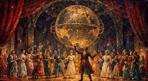

A STUDY IN WORDSASHAKESPEAREAN VOCABULARY
All
adjective / pronoun
The whole amount; every person or thing.
全部；所有
指整體的數量，或每一個人、每一件事。
♫WORD PRONUNCIATION
❝ THE GOLDEN LINE
“All the world’s a stage, and all the men and women merely players.”
整個世界是一座舞台，所有男人和女人都只是演員。
FROM THE PLAY
As You Like It
Act 2, Scene 7·Jaques
A reflection on life as a performance.
♫QUOTATION PRONUNCIATION